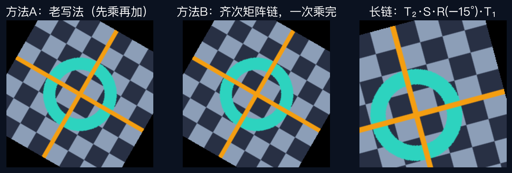

给点添一格 —— 成像几何、图像变换、全景拼接共同的地基
绕图像中心旋转 = 先减中心 → 旋转 → 再加回去。乘一次、加两次，顺序一错，整张图转飞；每换一个中心，公式还得重推。
点本来用两个数描述。现在后面添上第三格，先写 1——位置信息一点没变，点还是那个点。
添了格子的向量叫增广向量。细节：写 2、写 3 也行，前两格跟着同比放大就行——倍数不算数。
第三格是 1 时，除法是空操作。而第三格是 0 的点没法做这次除法——原书叫理想点，也叫无穷远点。
平移不再单独做加法——它被吸收进矩阵，和旋转一个待遇；第三格还是 1，除法是空操作。
线性映射永远钉死三维原点；
而我们的点，全住在第三格等于 1 的楼层上。
补成完整 3×3 后，平移、旋转、缩放一个模样：可连乘、可求逆（原书第 40–41 页）。
绕中心旋转 = T(c)·R·T(−c)。从右往左读：离点最近的先动手——E001 的「先乘再加」退休。
三维同款：点变四个数，最后一格还是 1。三维重建满屏都是它。
三步实验：老写法转图 → 齐次矩阵链重做 → 四矩阵长链。code/homogeneous_demo.py，两条路径独立实现，像素级一致。

交点 = l̃₁ × l̃₂ ｜ 连线 = x̃₁ × x̃₂（原书第 37 页）。不用自己消元——叉积替你把方程组解好了。
两条不重合的平行线按公式一算，第三格恰好是 0——交点落在无穷远点上；它的前两格，正好编码直线的方向。
现实里平行的铁轨，拍成照片却交于一点——那是透视把无穷远点搬到了画面上（讲者补充，E015 细展）。
数字是自由度（能独立调节的参数个数，原书表 2.1）。越往上越特殊、保住的越多。主菜在 E014，今天混个脸熟。
给点添一格，倍数不算数，
让平移也变成乘法。